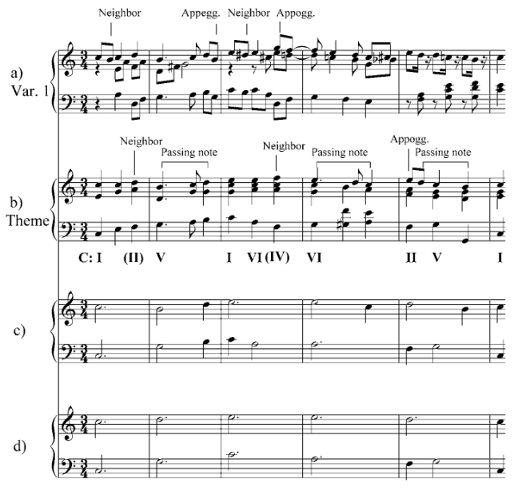
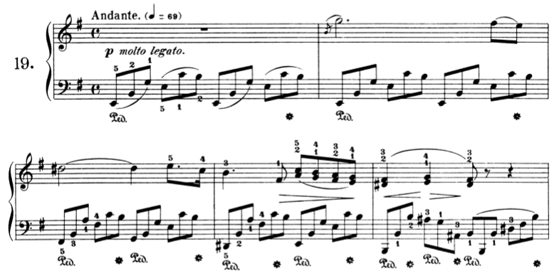
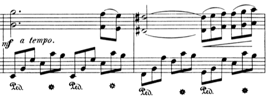
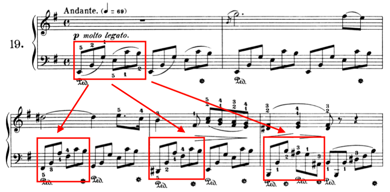
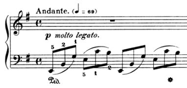
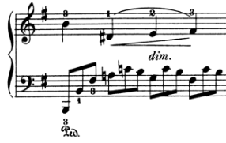
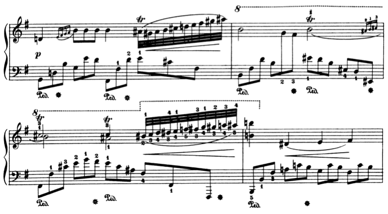

三类音乐分析
我们可以从很多角度分析一首音乐作品，比如分析它的风格，分析它的曲式结构，分析它的和声进行，分析它的素材的组织方式，分析它的情感，等等。分析的角度非常多，但我认为这些角度可以归纳为三类。本文将一一探讨这三类音乐分析。在这个过程中，肖邦夜曲 Op. 72 No. 1 会作为贯穿始终的例子。如果你没听过这首夜曲，可以试试 Maurizio Pollini 的演奏版本，那也是最打动我的版本。
第一类分析：结构与特征
拿到肖邦的夜曲，我们可以先从整体上分析它的特征。比如它的调性是 E 小调，拍速是行板，节拍是 4/4，等等。我们还可以分析它的结构。比如它具有 ABA’B' 的曲式。也就是说，这首作品可以分成四个部分，分别是主题 A，主题 B，带有变化的主题 A 和带有变化的主题 B。而对于这四个部分，我们又可以继续分析它们的特征和结构。比如主题 A 为小调，主题 B 为大调。其中主题 A 是一个复合乐段（compound period1），它在结构上可以分为前句（antecedent）和后句（consequent），而这两部分在结构上又可以继续分解。这个过程可以不断继续，直至将整首夜曲分解为一个个音符。
这种庖丁解牛式的分析便是本文要说的第一类音乐分析。在这类分析中，一首音乐作品可以分解成几个部分，每个部分又可以继续分解为更小的部分。而对于这些部分，我们则可以从音高、节奏、和声等角度分析它们的特征。
第二类分析：生成机制
如果说第一类分析是庖丁解牛，那么第二类分析便是在基因层面探究为什么牛是我们所看到的这个样子。第二类分析通常预设，我们听到的音乐、读到的谱都是表象，表象之下有更基本的东西，而音乐便是从这些更基本的东西发展或生成出来的。
Schoenberg 是第二类分析的一位代表人物，他总是用一种动机-发展的视角去分析音乐。比如下面是 Schoenberg 对贝多芬第一钢琴奏鸣曲的开头的分析2：

在 Schoenberg 的分析中，这段开头的核心素材非常少，就是 a、b、c 这三个动机。这三个动机要么直接复制，要么在音高或节奏上作少许变异，从而生成新的动机。新的动机加上原有的动机最终组合出这整段开头。简单地说，这整段开头是动机 a、b、c 在复制、变异、组合的操作下生成出来的。
Schenker 是第二类分析的又一位代表人物。他认为，当你从音乐中去掉装饰音、经过音、邻音等在结构上不太重要的素材后，可以见到表层血肉之下更为基本的骨架。下面就是一个例子3：

在这个例子中，从上到下，音乐不断去掉血肉，最终展露出骨架。相反，以骨架为基础，我们也可以不断添加血肉，从而生成出完整的音乐。
Schoenberg 和 Schenker 的理论并不相同，但两者都试图深入到音乐的表象之下，抓住更基本的东西，也就是我这里所说的「生成机制」。有的音乐类型本身就很能体现「生成」的视角。比如在一些极简主义音乐中，简单的素材通过节奏上的错位，生成出丰富且预料之外的音响效果。这种生成的视角也会引导我们思考算法作曲或自动作曲领域的问题，比如怎么从无到有生成一部完整的音乐作品，我们需要哪些基本素材，又需要哪些基本操作。
我们下面用第二类分析来审视肖邦的夜曲。首先，如上文所述，肖邦的夜曲分成四个部分，即 A、B、A' 和 B'。其中 A' 表示 A 带有变化的复现。下面是主题 A 的开头：

下面是 A' 的开头：

对比 A' 和 A 可以发现，A' 中加入了很多肖邦式的连音，旋律的走向也有变化。换句话说，A 变异后得到 A'，两者加上主题 B 及其变异组合出了整首夜曲。
再来看主题 A。下面是它的后句的开头：

对比 A 的开头，也就是 A 的前句，可以发现后句叠加了低八度的声部，旋律走向也有变化。换句话说，前句变异后得到后句，两者组合出了主题 A。
我们还可以再往下，来到动机的层次。比如 A 中的左手伴奏可以由最开头的第一个伴奏动机复制或变异并组合而成：

分析到此，你可以意识到，只需要少量的素材，经过不断的复制、变异、组合，便可以最终生成出这整首夜曲。
第三类分析：感受
第三类分析关注音乐带给听众的感受。这里的感受指的是音乐所传递的情感和表达的意象。这类分析试图发现这些感受是怎么来的，对应了音乐层面的哪些结构或特征。比如一首音乐听着很忧伤，可能是因为它是小调，它的节奏很缓慢，或者它的音域较低。
相比于前两类分析，第三类分析有一些特点：
- 更难系统化或形式化，也同时更个人化，因为感受本难以客观描述，尤其当感受很复杂或微妙时。而当你不是去分析，而是要创作传达某种感受的音乐时，这种难度会更大。比如，你要怎么用音乐表达「黑色、冰冷的火焰」这样的意象？
- 在我的阅读经验中，音乐理论类的文献通常更关注前两类分析，而音乐心理学文献则会关注第三类分析4；
- 感受的重要性可能与结构或生成机制的重要性并不对应。也就是说，可能一些肤浅的部分会给你特别强烈的感受，而这些感受会决定你对这首音乐的整体印象或评价。
从感受上来说，肖邦夜曲有三个地方打动我：
第一个是音乐刚开始时的左手伴奏动机：

这个开头传递给我一种冷峻、伤感的情绪，打下了这首夜曲的情绪基调，吸引着我听下去。但是抛开感受，这个动机并无结构或机制上的重要性，你可以用任何别的素材来代替这个动机。
第二个是主题 A 前句的结尾：

这个段落让冷峻和伤感的情绪逐渐增强，让音乐很好地过渡到后句。
第三个是主题 A' 出现时，本来下行的旋律变为上行，同时音乐中插入了大量的半音、连音、颤音，使得情绪变得非常强烈，并上升到另一个高度。下面是其中一个片段：

相比于这三处特别打动我的地方，主题 B 的大调属性对我来说则是败笔，它破坏了这首夜曲的情绪基调。
至此你可能发现，第三类分析可能非常私人化、碎片化。打动你的部分可能在结构、机制、创新的层面都不重要，但是你就是有感觉。不过这类分析对你的创作会很有帮助。你可以探明自己喜欢的感受背后的音乐基础，然后将它们用到创作中去。
-
Caplin, W. E., & Caplin, W. E. (2013). Analyzing classical form: an approach for the classroom. Oxford University Press. ↩︎
-
Schoenberg, A., Stein, L., & Strang, G. (1967). Fundamentals of musical composition (p. 63). London: Faber & Faber. ↩︎
-
Pankhurst, T. (2008). SchenkerGUIDE: a brief handbook and website for Schenkerian analysis (p. 11). Routledge. ↩︎
-
Juslin, P. N., & Sloboda, J. A. (2013). Music and emotion. In D. Deutsch (Ed.), The psychology of music (pp. 583–645). Elsevier Academic Press. https://doi.org/10.1016/B978-0-12-381460-9.00015-8 ↩︎